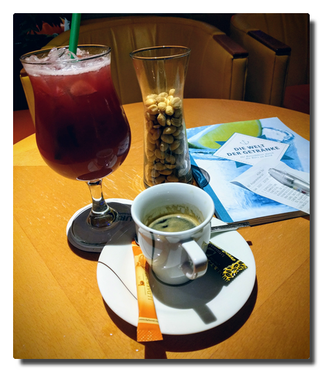

Love Boat - The Real Story. Kreuzfahrt in den hohen Norden
English- Prolog
- Tag 1. Hamburg
- Tag 2. Wochenend' und Sonnenschein
- Tag 3. God morgen, Haugesund!
- Tag 4. Ahoi!
- Tag 5. Land in Sicht
- Tag 6. Das Ende der Welt
- Tag 7. Nordkapp
- Tag 8. Tromsø rain, Tromsø rain
- Tag 9. Sortland calling
- Tag 10. A storm is coming
- Tag 11. Vakker byen
- Tag 12. Trondheim
- Tag 13. Die Stadt des Regens
- Tag 14. Heimkehr
- Epilog
Prolog
Der von langer geplante Familienurlaub zu den Polarlichtern naht. Es war ziemlich schnell klar, dass es eine Kreuzfahrt werden soll. Erwähnt man in Gesprächen diese Reise, ist die zwingend darauf folgende Einwortfrage "Hurtigrouten?". Die Einwortantwort darauf ist "Nein.", die längere Ausführung ist "Nein, wir haben uns für AIDA entschieden, primär wegen der einfachen An- und Abreise innerhalb Deutschlands. Ja, ich glaube schon, dass sich der Ballermann-Charme auf dieser Route in Grenzen halten wird."
Die Reise heißt "Winter im hohen Norden" und seit 2017 beim Kreuzfahrtveranstalter im Programm. Zwei Reiseberichte aus dieser ersten Saison findet man hier:
- Winter im hohen Norden mit AIDAcara
- Reisebericht: Nordlichter und Winter im hohen Norden mit AIDAcara
Hinweise
-
Aus meinen Notizen ist ein unerwartet langer Bericht geworden (>5000 Wörter), den ich in mehrere Artikel unterteilt habe:
Dies ist der gesamte Bericht. Kommentare sind unter den Einzelartikeln möglich. Viel Spaß beim Lesen. 2. Ursprünglich hatte ich einige Stichpunkte auch für das AIDA-Feedback-Formular selbst festgehalten. Die habe ich beibehalten. Falls hier also AIDA-Mitarbeiter mitlesen sollten, die Wege der Daten sind schließlich unergründlich, in einer blauen Box. 3. Persönliche Tipps oder Randnotizen erscheinen in einer orangefarbenen Box.
AIDA-Feedback
... diese blauen Boxen sind für euch.
Ankes Tipps
... sehen so aus.
Tag 1. Hamburg
Habemus Gepäck
Wir sind vier Erwachsene und ein Dreijähriger auf zweiwöchiger Winterreise. Zur Überraschung der meisten Beteiligten wird das gesamte Gepäck innerhalb einer Minute geräuschlos im Kofferraum verstaut. Gutgelaunt oder zumindest in entspannter Nichtlaune fahren wir Richtung Hamburg. Ein paar Stunden später erreichen wir den Parkplatz des Shuttleservice, geben unser Gepäck auf, checken ein und schon stehen wir auf dem Kahn.
Das Schiff gleicht einem Ameisenhaufen, im Inneren wimmeln Passagiere auf der Suche nach Kabinen und Orientierung und Crew, die die ankommenden Koffermassen verteilt und anderen Arbeiten nachgeht. Nach einem ersten Vortasten in fremden Gefilden, unsere kleine Reisegruppe ist AIDA-unerfahren, beschließen wir, vor dem Ablegen einen Kaffee zu trinken.
 |
|---|
| Anfahrt |
Das Getränke-Abrechnungssystem
Wir hatten die Flatrate für alkoholfreie Getränke gebucht und zusätzlich zur Bordkarte eine entsprechende Karte beim Check-In erhalten. Diese sollte uns nun die Heißgetränke auf den Tisch zaubern.
Nach Lieferung der Getränke erhielten wir zu unserer Verblüffung, denn wir hatten ja die Flatrate, einen zu unterzeichnenden Beleg. Der damit konfrontierte Servicemitarbeiter war zunächst wenig hilfreich, da seine Englischkenntnisse ungefähr dem meiner Mitreisenden entsprach. Na das konnte ja noch lustig werden...
Ich konnte dem leicht überforderten und vielleicht auch ein wenig eingeschüchterten sehr jungen Mitarbeiter doch noch die relevante Information entlocken. Die Getränke werden je nach Buchungsart entweder dem Bordkonto angerechnet oder auf eine vorhandene Flatrate gebucht - in jedem Fall werden die Artikel im System unter dem Normalpreis erfasst. Die Bestellung muss dann mit Kabinennummer und Unterschrift quittiert werden. Die Bons werden gesammelt, eingelesen und stehen dann auch zur Einsicht bereit (auch um Missbrauch und Fehlbuchungen zu erkennen/aufzuspüren). Sagt einem nur keiner.
AIDA-Feedback
Auch wenn die Bordsprache mit "Deutsch" angegeben ist und ein Teil des Servicepersonals aus Muttersprachlern besteht (Rezeption, Ausflugscounter, Guides/Scouts, Restaurantleiter), kommt man aufgrund der internationalen Belegschaft mit Englisch doch am ehesten zum Ziel. Angesichts der Zielgruppe der Reisenden sollte dies ehrlicherweise gezielt kommuniziert werden.
Leinen los
Pünktlich um 18 Uhr stehen wir aufgeregt und glücklich auf Deck 6 und beobachten, wie sich das Schiff langsam von der Pier und dann vom Hamburger Hafen entfernt. Es stehen noch ein Abendessen und die Begrüßungsveranstaltung im Theater an.
Irgendwann gegen 22 Uhr, wir sind auf dem Weg Richtung Dänemark, ist Nachtruhe auf dem Schiff eingekehrt. Mein Tag, die ganze Woche, war lang, stressig und ereignisreich und ich beschließe, auf dem Hamsterrad im Sportstudio auf Deck 9 noch etwas herunterzukommen. Ich schlafe bestens.
 |
|---|
| Auslaufen aus dem abendlichen Hamburger Hafen |
Tag 2. Wochenend' und Sonnenschein
Die strahlende Wintersonne treibt die Passagiere in Scharen auf die Außendecks, eingemummelt in gelbe Fleecedecken wird sich in der Sonne entspannt als wäre man hier im Urlaub.
Informationsbedarfsermittlung
Nun geht es an die weiteren Planungen: was macht man eigentlich so an Bord? Welche Landausflüge sind interessant? Das AIDA-Bordportal wird ein stetiger Begleiter; in diesem findet man alle relevanten Informationen für das Leben an Bord - Zugriff aufs Bordkonto, Positionsdaten, Wetter, Kurs, Geschwindigkeit - wir beaufsichtigen jetzt die Machenschaften der Brücke -, Tagesplaner für Veransteltungen etc.
Zum Konzept der AIDA Selection-Reisen gehört ein durch Edutainment ergänztes Unterhaltungsprogramm, das sonst nicht zum Standardprogramm einer Kreuzfahrt dieses Anbieters zu gehören scheint. Bei dieser Fahrt dabei sind die Premium-Lektoren Georg Hahn, der über Geschichte, Land und Leute der Ziele referiert und Dr. Hartmut Renken, der mit kurzweiligen naturwissenschaftlich orientierten Vorträgen und Workshops den Passagieren die Zeit vertreibt.
AIDA-Feedback
Das Edutainment-Angebot habe ich als Bereicherung empfunden. Die Kombination aus historisch/gesellschaftlichen und naturwissenschaftlich orientierten Vorträgen hat meiner Beobachtung nach auch bei vielen anderen Passagieren Anklang gefunden. Aus persönlicher Sicht und Präferenz hätte es davon sogar mehr geben können, ich bin mit "traditioneller" Kreuzfahrt-Show-Unterhaltung aber auch grundsätzlich eher weniger zu begeistern. Bei einer zukünftigen Reiseplanung wäre dies ein Faktor, auf den ich Wert legen würde.
Kaffeecalypse
Nachmittags steht im Calypso-Restaurant "Kaffee und Kuchen" auf dem Plan, das klingt doch nach einem gemütlichen Beisammensein. Bei der Ankunft stellen wir fest, dass der Rest des Schiffes bereits anwesend ist. Es herrscht ein unfassbares Gedränge am fast erschöpften Kuchenbuffet, an den Tischen gibt es keine freien Plätze. Die Stimmung auf dem Bahnhof Roßlau nach der vierten Verspätungsansage ist entspannter.
Ich habe einen vermeintlich cleveren Plan und beschließe, dass wir an einem freien Platz im Außenbereich des Restaurants Platz nehmen und ich uns etwas von drinnen organisiere. Allein bin ich einfach wendiger.
Getränke-Flatrate, die Zweite
Da die Kaffeekannen auf den Tischen von Bluthunden verteidigt werden, trete ich an den Kaffeeautomaten der Getränkestation heran. Was nicht nur mich etwas stutzig macht, ist, dass man die Bordkarte einführen soll, keine Getränkekarte.
Und so ist es auch: die Kaffees aus den Automaten der Restaurants werden über das Bordkonto abgerechnet. Bestellt man hingegen Kaffee in den Bars, sind diese von der Getränkeflat gedeckelt. Klingt komisch, ist aber so.
Nach einer Bestellung eines alkoholfreien Biers ist erneute Verwirrung angesagt, denn dieses ist wieder nicht in der Getränkeflat enthalten. Eine Nachfrage an der Rezeption ist geklärt, dass nur Getränke aus dem offenen Ausschank enthalten sind. Das heißt:
-> X wird in Flaschen serviert: nicht von der Getränkeflat gedeckelt -> X wird in einen alkoholfreien Cocktail geschüttet: von der Getränkeflat gedeckelt
Klingt komisch, ist aber so.
AIDA-Feedback
Als Mitarbeiter oder auch als routinierter Passagier mag man dieses Vorgehen verinnerlicht haben. Zur besseren Transparenz wäre es meiner Ansicht nach einfach und simpel umsetzbar, dies in der Getränkekarte zu markieren.
Dinnerdisaster
Mit einem Dreijährigen unterwegs zu sein, macht einiges komplizierter. Er ist zu groß, jederzeit mit Fertigfutter befriedet und anschließend geparkt werden zu können und zu klein, um sich an die Bedürfnisse der Erwachsenen anzupassen.
Das Abendessen wird in den Restaurants zwischen 18 und 21 Uhr angeboten. Es gibt das Selection-Restaurant mit täglich wechselndem À la carte-Service, die anderen beiden Restaurants bieten reichhaltige Buffets mit ebenfalls täglich wechselnden Themenschwerpunkten.
Die Gästedynamik hatten wir bis zu diesem zweiten Tag noch nicht durchschaut bzw. keiner besonderen Beachtung verliehen. Das rächte sich nun.
Gutgelaunt suchten wir gegen 19 Uhr das Calypsorestaurant auf. Unsere Gelassenheit schlägt sich in Irritation um, denn wir finden für unsere fünf Personen keinen freien Tisch, an dem wir Platz nehmen könnten. In der Hoffnung, dass es für nur drei Personen einfacher sein würde, einen Platz im Marktrestaurant zu finden, schlage ich also eine Aufteilung unserer Reisegruppe vor. Zwei Minuten später kommt mir kopfschüttelnd K. entgegen "Die sitzen alle vor ihren (Wein-)Gläsern".
In diesem Moment erschließt sich mir, warum das Marktrestaurant abends für eine halbe Stunde eine Pause einlegt - um 19:30 Uhr wird kurz geschlossen, neu eingedeckt und ab 20 Uhr kann man das nun leere Restaurant betreten und hat eine Chance auf einen Platz.
Für den Kleinen erweist sich diese Option als zu spät, das Abendessen wird zum nervenzehrendem Abschnitt des Tages.
AIDA-Feedback
Die halbstündige Pause im Marktrestaurant erweist sich als absolut notwendig. Als Ergänzung oder Alternative könnte man ein paar "Kindertische" einrichten (zum Beispiel hinter dem Eingang gleich links), in deren Nähe zum Beispiel auch Sitzerhöhungen bereit liegen und an denen Familien mit kleinen Kindern Vorrang haben. Den Vorrang könnte man ganz zwanglos erreichen, indem dies explizit als Tische ohne Weinausschank deklariert wären. Dies könnte auch für trockene Alkoholiker interessant sein.
Ausgang
 |
|---|
| Baby, it's cold outside... |
Nach einem ganzen Tag auf See und dem Stress beim Abendessen mache ich mich zu einem Spaziergang über die äußeren Decks auf. Um zu beweisen, dass ich auf Wasser laufen kann, loggt Strava mit. Ich mache also einen 70-minütigen Spaziergang in Schlangenlinien auf dem Wasser in einem Mordstempo...das macht mir so schnell keiner nach!
Nach der Tour schaue ich in der AIDA Bar vorbei, in der zu meiner Überraschung K. und M. am Discofox-Marathon teilnehmen und das Ding schließlich gewinnen. Kreuzfahrtatmosphäre voraus!
Tag 3. God morgen, Haugesund!
Wir legen pünktlich in Haugesund, unserem ersten und zugleich südlichsten Zwischenstopp, an und machen uns nach dem Frühstück zu unserem Landgang auf.
 |
|---|
| Haugesund havn |
Wir schlendern durch die übersichtliche Innenstadt und nach dem üblichen Halt in der Touristeninformation, wir sind langjährig angelernte Individualtouristen, laufen wir zum kombinierten Monument Haraldshaugen (mit dem Obelisken Haraldstøtten) und Krosshaugen (mit dem Steinkreuz) in Erinnerung an die Herrschaft Königs Harald Hårfagre (Harald Schönhaar) und die Christianisierung des Landes.
 |
|---|
| Harald Hårfagre |
Meine Mitreisenden entschließen sich zu einer Erholungspause nach dem Fußmarsch und ich versuche mich noch einmal an der Schlacht am Kuchenbuffet. Ich ziehe triumphierend mit Kuchen und Tee von dannen.
 |
|---|
| Dieser Teller wurde ohne Gewaltanwendung befüllt. |
Am frühen Abend legen wir ab. Zum Abschied erfolgt das übliche Schallsignal '3x lang', gefolgt von Enyas "Orinoco Flow" und einem anderen musikalischen Begleitstück, das mir nicht bekannt ist. Uns steht sogleich der zweite Seetag bevor.
Abends frischt der Wind auf, im Nachhinein betrachtet läppische 7 Windstärken sorgen für die ersten Ausfälle bei den beiden männlichen Mitgliedern unserer Reisegruppe.
Das Rauschen des Meeres
Eine Schiffsreise unternimmt man vorsätzlich. Das Unterwegssein ist Teil der Destination. Die Umgebung Meer hat nachweislich positive entspannungsfördernde Effekte auf den Menschen, man kann Meeresrauschen auf Tonträgern erwerben oder aber einfach YouTube nutzen.
Das ist interessant, weil das Meer für den Menschen eigentlich ein lebensfeindliches Ökosystem voller Gefahren und damit eine natürliche Grenze darstellt. Wir empfinden das Rauschen des Wassers als faszinierend und verweilen im Starren auf die Bewegungen und Verwirbelungen der Wellen, die uns in Todesangst versetzen sollten, denn ohne den Schutz des Stahlkolosses um uns herum wären wir alle innerhalb von Minuten tot.
Friendship
Im Sommer bin ich einmal beim Segeln auf der Havel mit einem Freund in ein schnell durchziehendes, aber starkes Unwetter mit Windstärke 7 bis 9 geraten, das an Land schwere Schäden anrichtete. Wir konnten uns in einer Bucht positionieren, um mit minimaler Besegelung, eigentlich hätten wir noch eine weitere Reffstufe gebrauchen können, noch manövrierfähig zu sein und den Sturm über uns hinwegziehen zu lassen. Das hat auch gut funktioniert, war aber auch ziemlich abenteuerlich und hat uns ordentlich durchgeschüttelt und bis auf die Knochen nassgemacht.
Angesichts dieser Erfahrung schaue ich mir nun die Wellen an und versuche, das Gedankenspiel, das wir an Schönwettertagen auf dem Wasser gelegentlich durchsprechen, weiter zu denken. Also: wäre einem alles egal und würde das Boot Richtung New York nehmen, wie weit würde man mit der Nussschale (Friendship 24) kommen? Mit guter Vorbereitung und Equipment und etwas Glück mit dem Wetter kann man schon vorsichtig optimistisch werden, aber wenn es einen bei Windstärke 10 und 12 Meter hohen Wellen ausknockt oder von Deck haut, werden deine Überreste niemals irgendwo gefunden.
Das bringt mich zu einer weiteren Frage:
Wann fällt auf, dass einer fehlt?
Wie oft ich vor meinem Urlaub den Rat, nicht den Küblböck zu machen, gehört habe, habe ich nicht gezählt. Zur Info: Daniel Küblböck war eine Casting-Show-/Reality TV-Persönlichkeit, die im letzten Jahr eine letzte traurige Medienfußnote wurde, als sie von einem Kreuzfahrtschiff ins Meer sprang.
In einem Video eines Reisejournalisten wird erwähnt, dass jährlich bis zu 19 Personen weltweit von Kreuzfahrtschiffen verschwinden.
Von einem fahrenden Schiff aus auf dem Ozean ins Meer zu springen, ist eine sehr, sehr sichere Form des Selbstmords. Selbst wenn dies unter Zeugen geschieht, ist es nahezu unmöglich, einen Verunglückten im Auge zu behalten, falls dieser überhaupt noch bei Bewusstsein ist und wieder auftaucht, bis Rettungsmaßnahmen eingeleitet werden. Jeder, der schon einmal ein "Mann/Boje über Bord"-Manöver gemacht hat, dürfte dies nachvollziehen können.
Geht man ohne Zeugen über Bord, fällt das zunächst gar nicht auf.
 |
|---|
| Das rote Telefon |
Crew
Am schnellsten fällt vermutlich der Verlust eines Crewmitglieds auf. Die Leute, die täglich die Außendecks in Schuss halten, arbeiten meiner Beobachtung nach tendentiell in Zweierteams. Diese Prämisse angenommen fällt ein fehlendes Teammitglied je nach Aufgabenverteilung innerhalb einer Arbeitsschicht auf. Da die Jungs und Mädels hier aber keinen 9 to 5-Job absitzen, kann das auch schon mal ein halber Tag sein. Spätestens zum Arbeitsbeginn am nächsten Tag dürfte es auffallen.
Zeitfenster: 0,5 - 24 Stunden? Oder gibt es Meldeintervalle für Außendeckcrew?
Passagier
Hier muss man wohl zwischen Alleinreisenden und Nichtalleinreisenden unterscheiden.
Da man sich an Bord frei bewegen kann, niemand abgehaltene oder ausgefallene Mahlzeiten überprüft und auch nicht gezwungen werden kann, in Häfen an Land zu gehen, wird man spätestens beim Auschecken am Ende der Reise vermisst werden. Aber es gibt ja auch noch das Housekeeping. Melden die, wenn eine Kabine eine Weile ganz offensichtlich nicht benutzt wurde? Prinzipiell ist es ja möglich, dass die Person in einer anderen Kabine nächtigt oder gar aufgrund von Beschwerden möglicherweise nur noch auf einem Barhocker sitzend...wer weiß das schon? Preisfrage: Schlägt jemand vom Housekeeping Alarm und wenn ja, wann? Ab dem ersten, zweiten, dritten Tag...?
Zeitfenster: ein bis mehrere Tage.
Für Nichtalleinreisende gilt vermutlich der Grad der sozialen Bindung als ausschlaggebend. Auf einem Kreuzfahrtschiff gibt es viele Rückzugsecken. Je größer das Schiff, desto höher ist die Wahrscheinlichkeit, sich nicht über den Weg zu laufen. Selbst auf der kleinen AIDAaura ist man neben bekannten Gesichtern auch bis zum Ende immer wieder neuen Mitreisenden begegnet, bei denen man hätte schwören können, diese in den vergangenen zwei Wochen noch nie gesehen zu haben.
Bei einem Ehepaar dürfte es bei der nächsten Mahlzeit, wohl spätestens bei angehender Nachtruhe, suspekt werden, wenn der andere abwesend ist. Bei einer losen Reisegruppe, die aus finanziellen Gründen gemeinsame Kabinen bezieht, mag eine Fremdübernachtung allein eventuell noch seltsam, aber unverdächtig erscheinen. Danach dürfte aber auch hier Unruhe aufkommen.
Zeitfenster: 1 bis 24 Stunden...?
Links
- Spotify-Playlist: 5 Stunden Meeresrauschen
- Spiegel Online: Wilfried Erdmann: Erster deutscher Weltumsegler 1967/68
- Wikipedia: Blauwasserrouten
- GEO: Darum wirken Naturgeräusche so entspannend
- stern: Warum uns das Meer glücklich macht
- YouTube: 9 Things Cruise Lines Don't Want You To Know. And Won't Tell You
Tag 4. Ahoi!
Am Morgen treibt es mich raus und ich drehe vor dem Frühstück eine Runde an Deck. In der Anytime Bar gibt es Kaffee für Frühaufsteher. Ich grüße die herumstehenden Raucher im Vorbeigehen. Nach dem Frühstück okkupiere ich mit Buch und in Decken gehüllt eine Sofaecke draußen auf Deck 11. Es ist windig, wolkig, etwas schön, aber auch ein wenig kalt.
 |
|---|
| Die Gelbdecken demonstrieren für mehr Entspannung und besseres Wetter. |
Das Wetter wird zunehmend schlechter und so verziehe ich mich am frühen Nachmittag und suche im Inneren nach einem ruhigen Plätzchen. Dies erweist sich als gar nicht so einfach, aber die AIDA Bar kristallisiert sich aus verschiedenen Gründen als ein Hauptaufenthaltsraum heraus. Ich bin so inaktiv, dass ich das Mittagessen ausfallen lasse. Es setzt leichte Gereiztheit bei mir ein. Am Nachmittag steht wieder Edutainment auf dem Plan und der Ausflug zum Nordkap wird gebucht.
Ein Tourist tut, was ein Tourist tun muss.
Mehr Wetter
Unser Schiff wird flankiert von zwei Tiefdruckgebieten. Das Hochdruckgebiet über heimatlichen Gefilden führt zu einem regen Luftmassenaustausch zwischen den dreien, als Bonus winkt das Tiefdruckgebiet über Island uns mit schäumenden Wellen über den Atlantik zu.
Kurz: Wir haben Sturm und Wellengang. Viel. Sehr viel.
Was wir auch haben: viel Platz beim Abendessen und an der Bar. Man tänzelt so durch das inzwischen vertraute, wankende Schiff. Das Abendunterhaltungsprogramm wurde wegen des Wetters auf den nächsten Tag verlegt, Deck 6 und 11 sind aus Sicherheitsgründen gesperrt.
Wer nicht seekrank ist, verbringt seine Zeit mit Spiel, Spaß und Spannung in den Bars und träumt vom morgigen Landgang in Bodø.
Orga
Eine nicht so höfliche Möglichkeit, die Zeit auf einem wankenden Schiff zu verbringen, ist es, dem Personal beim Arbeiten zuzusehen.
Nach ein paar Tagen fällt auf: die arbeiten immer (12+ Stunden) und auch stets an den selben Positionen. Man spaziert morgens oben an Deck und der Typ, der die Poolbar öffnet, bringt dir 3 Stunden später einen Kaffee und abends ein Bier. Ich wette, der "Nice Indian Guy" legt danach noch eine Schicht im Crew-Nachtclub ein. Ist der Typ vielleicht ein Vampir...? Das gleiche in den Restaurants: die Typen, den du morgens begrüßt, begrüßt man am Abend wieder.
Und die bleiben so verdammt freundlich dabei! Ich hoffe, die bekommen alle am Monatsende einen angemessenen Batzen Kohle überwiesen, denn ansonsten kann ich so eine Reise nie wieder machen...
 |
|---|
| Das tägliche Personalkarusell in der sternförmigen AIDA Bar |
Tag 5. Land in Sicht
Mit einer frühmorgendlichen Sportrunde lasse ich den Tag beginnen. Als das Schiff sich dann langsam unserem zweiten Hafen Bodø nähert, bietet sich um uns herum ein atemberaubend schönes Panorama. Dieser Tag verspricht großartig zu werden.
 |
|---|
| Postkartenmotiv |
Nach der letzten unruhigen Nacht sind die Passagiere heiß darauf, das Schiff zu verlassen. Die Ausflugsbusse stehen bereit und trotz der Information, dass Bodø eine hässliche Stadt sei, macht sich unsere Reisegruppe zum üblichen Fußmarsch auf.
Die angepriesene Hässlichkeit der Stadt ist ihrer nahezu vollständigen Zerstörung bei einem deutschen Luftangriff im Jahr 1940 geschuldet. Viele Gebäude wurden durch eher untraditionelle Gebäude ersetzt und so erinnert die zentrale Fußgängerzone an die deutscher Städte.
Auch in einem Reisebericht, den ich nach der Rückkehr las, war man geradezu empört, in dieser unansehnlichen Stadt Halt gemacht zu haben. Das hat mich im Nachhinein nochmal zusätzlich verärgert: will man auf so einer Reise nun Land und Leute sehen oder was? Norwegen ist wie der Rest der Welt kein Märchenland und besteht aus mehr als schöner Landschaft und überteuerten Schlittenhundfahrten für Touristen.
Wenn man ein wenig die Augen aufmacht, kann man auch in Bodø Entdeckungen machen, etwa die lokalen Streetart-Kunstwerke.
 |
|---|
| Streetart: "Malstrøm" von David de la Mano |
Während unseres Erkundungsrundgangs erspähe ich einen Supermarkt - es ist Zeit, mein Norwegisch auf die Probe zu stellen und norwegische Spezialitäten zu erwerben: Brunost (brauner Käse) und Lefsegodt (weiches Gebäck mit einer Art Frischkäsecreme).
 |
|---|
| Geht ne Deutsche in Norwegen in einen Kiosk. Hitler. ROTFL. (leider etwas unscharf) |
Am Nachmittag gehe ich noch einmal allein durch die Stadt, genieße die Unbekanntheit der Umgebung, gehe neugierig durch die Straßen und bin pünktlich zum Abendessen zurück an Bord.
 |
|---|
| Oh, wie schön ist Bodø |
Leinen los, wir fahren weiter nach Norden!
Ankes anekdotischer Tipp
Ab dem dritten Tag vermisste ich das Radfahren. In Kombination mit der Neigung, die Umgebung selbständig zu erkunden, durchfuhr mich ein Gedanke: Ein Faltrad hätte man mitnehmen sollen. Je Passagier kann man zwei große Gepäckstücke aufgeben. Wenn man wie ich mit einem auskommt, sollte es theoretisch kein Problem sein, ein ordentlich verpacktes Faltrad (± 12 kg) mitzunehmen. Dies vergrößert den eigenen Radius an Land ungemein.
Die Nacht der Nächte
Der Abend beginnt ruhig. Dies sollte sich allerdings innerhalb kürzester Zeit ändern. Seit der diffizilen Wetterlage am zweiten Seetag sind wir Bordportal-süchtig - Geschwindigkeit, Kurs, Wind, wir sind informiert.
K. traut ihren Augen kaum: auf dem Bild der Bugcam sieht man grüne Schleier am Himmel. M. wird nach oben geschickt, um die Lage zu evaluieren. In Ungläubigkeit und Aufgeregtheit ziehe ich mich warm an.
Wir betreten Deck 11, dort haben sich bereits einige Leute mit ihrem teuren Fotoequipment in Position begeben. Der Himmel ist bewölkt, einen Tag vor Vollmond strahlt der Mond die Meeresoberfläche und Landmassen der Lofoten an. Das allein erzeugt eine atemberaubende, mystische Atmosphäre.
Es wird getuschelt, man schielt sich auf die Displays. Jemand zeigt auf sein Kameradisplay und sagt "Da ist es." Wir starren in den Himmel und sehen: nichts.
Wir starren weiter und beginnen, einen Unterschied zwischen den vom Mond hell angeleuchteten Wolken und diffusen Schleiern zu sehen. Ja, die Schleier sind grünlich und sie bewegen sich leicht. Das soll es also sein?
Wir verharren weiter in der Winternacht erstarrt im Starren in den Nachthimmel. Die Wolken lichten sich tatsächlich. Die Wettervorhersage sagt für die nächsten Tage Wolken und Niederschläge an, das Islandtief zieht uns immer noch hinterher, und so fällt irgendwo der Satz "Heute ist die Nacht der Nächte."
Deck 11 erwacht zum Leben. Die Sichtung der Polarlichter wird in den Bauch von Stahl-Moby Dick weitergetragen. Die Kälte treibt die Leute immer wieder zum Aufwärmen hinein und der Grund dieser Reise wieder hinaus.
Der Himmel gibt grünes Licht. Frost und Freude, die treuen Begleiter der Polarlichter, bleiben uns bis etwa 2 Uhr erhalten.
Was für ein großartiger Tag.
Tag 6. Das Ende der Welt
Der vergangene lange Tag bringen mich dazu, bis 7 Uhr auszuschlafen. Wir werden noch bis zum Abend auf See unterwegs sein und dann im Hafen von Honningsvåg übernachten.
Alle sind nach den Erlebnissen bester Stimmung. In unserer Reisegruppe ist aktuell niemand seekrank und auch unser Jüngster scheint sich nach Anlaufschwierigkeiten etwas eingelebt zu haben, er klatscht zum Frühstück das Personal ab und verabredet sich für später im Kids Club.
 |
|---|
| Nordkapumfahrung in mystischem Licht |
Am Nachmittag passieren wir das Nordkap bei Sonnenuntergang. Die Sicht ist klar und man kann von weitem die Nordkaphalle und den Globus sehen. Ich stehe fast eine Stunde auf Deck 6 und genieße die Aussicht.
Später wird es windig und es schneit. Die nächtlichen Nordkaplandausflüge werden abgesagt, weil die Straße aufgrund des Schneegestöbers nicht freigegeben ist. Ob der Ausflug morgen klappt, ist noch unsicher.
K. und ich schlendern durch das leere Honningsvåg. Wir schauen uns genauer das Schiff an und sehen: hinter unseren Kabinen befindet sich der Crew-Nachtclub, das erklärt einiges...
 |
|---|
| Honningsvåg im Schnee. Ein Schiff. |
Dann grüne Schleier. Polarlichter. Als wir aufs Schiff zurückkehren, geht das Spektakel richtig los. Grüne, auch ein wenig rote Nordlichter tanzen stundenlang für uns am Himmel.
 |
|---|
 |
| Not all heros wear capes. Bamse, the canine war hero. |
Tag 7. Nordkapp
Es liegen zwei perfekte Polarlichtkreuzfahrttage hinter uns. Alles, was nun noch folgt, ist nur noch Deko auf dem Sahnehäubchen.
Es geht auf zum Landausflug zum Nordkap, das wir bereits gestern von der Wasserseite zu sehen bekamen. Dort oben war es kalt und windig und die Sicht war klar und so war der Ort auch ohne Mitternachtssonne definitiv den Besuch wert.
 |
|---|
| Hilsener fra Nordkapp! Touristenlevel over 9000! |
Gegen Abend wird der Seegang wieder rauher und so lasse ich den Tag gemütlich in der AIDA Bar ausklingen.
|  |
|---|
| Es ist alles so furchtbar... |
Tag 8. Tromsø rain, Tromsø rain
Mittags erreichen wir den Hafen der größten nordnorwegischen Stadt Tromsø, wo wir einen ganzen Tag Aufenthalt genießen. Vom Liegeplatz bis in die Innenstadt ist ein Busshuttle eingerichtet.
 |
|---|
| Empfang! |
Ich laufe durch die Stadt, überquere natürlich die Tromsøbrua (Tromsøbrücke) bis zur Ishavskatedralen (Eismeerkathedrale).
Es regnet bei Temperaturen deutlich über dem Gefrierpunkt und der komprimierte Schnee hat sich durch wiederholtes Antauen und Gefrieren in dicke Eisplatten verwandelt, die nun abtauen. Man läuft also auf wasserbedecktem Eis, das von tiefen Pfützen umrahmt wird, die von schnell fließendem Schmelzwasser genährt werden. Am Abend sind meine Schuhe durch.
Die vertagte Polarkreistaufe wird nun heute nachgeholt, wegen des Regens allerdings nicht auf dem Pooldeck, sondern in der AIDA Bar. Manche dieser Aktionen lassen erahnen, wie ballermanesk es beim schwimmenden Cluburlaub sonst üblicherweise zugeht. Ich verziehe mich alsbald.
Ein Teil unserer Reisegruppe geht später noch ins Konzert in die Eismeerkathedrale und ich früh zu Bett.
 |
|---|
 |
 |
| Alles ganz schön hier und andere Reedereien haben auch schöne Schiffe (Ja, das ist die "Viking Sky"). |
Tag 9. Sortland calling
Es regnet. Wir liegen immer noch in Tromsø und ich bin mal wieder in der Stadt unterwegs. Ich kaufe Postkarten, die ich beim nächsten Landgang einwerfen möchte. Es regnet.
Wir legen ab mit Ziel Sortland. Ich verbringe den Nachmittag mit Kaffee, Kreuzworträtsel und Kartenschreiben. Bester Urlaub aller Zeiten.
Tag 10. A storm is coming
Der Wecker klingelt in aller Früh', denn mein Landausflug zum Trollfjord geht um 8:00 Uhr los. Ich sitze mit anderen Ausflüglern am Frühstückstisch und wir verabreden uns für später. Nun, kurz vor 9 Uhr wird klar: es wird keinen Trollfjord geben. Es wird kein Sortland geben.
Wegen des Seegangs und des Windes können wir nicht in Sortland anlegen und erfahren im Laufe des Vormittags, dass wir einen vorgezogenen Seetag einlegen und direkt nach Trondheim durchfahren. Das Schiff rollt sich gemächlich durch den Atlantik und fordert zahlreiche Opfer, die in ihren Kabinen ausharren, bis es besser wird. Freie Platzwahl in den Bars.
In mir verbreitet sich eine leicht sentimentale Stimmung. Mehr als die Hälfte der Reise liegt hinter uns, wir fahren südwärts, es liegen nur noch zwei Stopps vor uns, bevor es in einer weiteren Tagesreise zurück nach Hamburg geht.
Mein Gehirn kann den Gedanken noch nicht ganz verarbeiten, dass in wenigen Tagen, nachdem man für zwei Wochen auf diesem Schiff mit hunderten von Menschen zusammengepfercht war und jeden Tag dieselben Leute gegrüßt und mit einigen einen kurzen Schwatz auf dem Flur gehalten hat (Hello Katrina!) die Wahrscheinlichkeit gegen Null geht, irgendjemanden von ihnen jemals wieder zu sehen. Die Gäste fahren nach Hause und machen da weiter, wo sie vor Hamburg aufgehört haben und die Crew sieht für zwei Wochen die nächsten Gesichter und macht da weiter, wo sie vor Hamburg aufgehört hat, nämlich sich ohne Unterlass den Arsch abzurackern (Kudos to all of you).
In diesem Zusammenhang erscheint es bizarr, Verkumpelungsversuche bei Gästen zu sehen. Wie funktioniert das? Machen die so häufig Kreuzfahrten, dass die immer wieder den gleichen Crew-Leuten über den Weg laufen? Ich kenne solche freundschaftlichen Annäherungsversuche aus meiner eigenen Tätigkeit im Kundenservice. Es liegt in der Natur der Sache, mit einigen Menschen näher auf einer Sympathieebene zu sein als mit anderen. Und bei diesen ist man auch zu einem gewissen Grad bereit, auf einer persönlicheren Ebene zu kommunizieren, ohne dabei die Grenze der Professionalität zu überschreiten.
Auf einem Kreuzfahrtschiff ist die Situation völlig zugespitzt. Als Gast mache ich vielleicht die Reise meines Lebens, bei der jeder Tag aufregend ist. Für die anderen Gäste bist du der nervende Nachbar mit dem komischen Dialekt oder der nette Zufallsgesprächspartner beim morgendlichen Rundgang an Deck. Für die Crew bist du diejenige, die für zwei Wochen ihre Klamotten auf dem Sofa in der Kabine verteilt, in den nächtlichen Morgenstunden durch das Schiff schlendert und an der Bar Ipanema ohne Zucker und noch mehr Espresso trinkt. Bis die nächsten kommen.
Tag 11. Vakker byen
Wir sind seit eineinhalb Tagen auf See und das Schiff wird kleiner. Gerade bei schwerem Seegang ist die Bewegungsfreiheit stark eingeschränkt, weil dann die Außendecks zum großen Teil gesperrt sind (Deck 6 und 11, Deck 10 nur ein paar Meter neben den Türen zum Luft schnappen offen). Morgens schwinge ich mich also in das Hamsterrad auf Deck 9 und nach der verdienten Dusche noch auf einen Morgenspaziergang nach draußen. Also: - aus der Kabine raus, eine Etage nach oben laufen, Staubsaugercrew grüßen - auf Deck 6 raus und eine Runde herumlaufen (oder zwei), die Außendeckwartungscrewleute grüßen (halten die mich inzwischen für bescheuert?) - die Treppe am Heck nehmen, an der Ocean Bar vorbei, andere Seite weiter nach oben, am Calypso auf Deck 9 vorbei und weiter nach oben - Deck 10, die Raucher bei Morgenkippe und -kaffee grüßen, einmal am Pooldeck rum, Aufräumcrew grüßen (halten die mich...?) - Treppe nach Deck 11 nehmen, mindestens zwei Runden drehen mit Abstecher nach Deck 12 - das Ganze wieder zurück Wie ein Knasti auf Hofgang.
Am Abend machen wir endlich in Trondheim fest und werden bis zum frühen Nachmittag bleiben. Der stürmische Seetag hat alle landhungrig gemacht und so entern nach dem Abendessen Scharen von Passagieren und einige Leute von der Crew die fast leere Stadt.
 |
|---|
| Nidarosdomen |
Wo sind wir hier eigentlich?
Wir gehen Richtung Innenstadt, vorbei am illuminierten Nidarosdomen, über Brücken und hin und her. Seltsam erscheint uns die Vertrautheit der Stadt. Während bisher die Ort- und Landschaften sehr andersartig waren, erinnert Trondheim im Stil straßenzugweise mehreren von uns unabhängig voneinander an die Stadt Potsdam. Es ist so seltsam, dass wir an manchen Stellen stehen bleiben und völlig verblüfft sind. Davon abgesehen, dass Trondheim und Potsdam keine direkte Verbindung miteinander haben, gibt es doch einige Parallelen, die dieses Trugbild und die Konvergenz bei der städtischen Entwicklung fördern: * beide Städte sind quasi gleich alt * sie sind vergleichbar groß in der Einwohnerzahl * sie sind von viel Wasser umgeben * sie verfügen über ein Straßenbahnnetz * sie gelten als Kulturstädte * Trondheim war lange Hauptstadt des Landes, Potsdam offizielle Residenzstadt des Königreich Preußen
 |
|---|
 |
| Trondheims nette Ecken |
Absacker
Nach der Rückkehr zum Schiff machen wir Pläne für den nächsten Tag und verabreden uns in der AIDA Bar. Die Schiffsband spielt Klassiker mit Crewmitgliedern und wir trinken Bier. Ich habe den Trollfjord schon vergessen.
|  |
| --- |
|
|
| --- |
|  |
| Tagesplaner im Bordportal und tägliche Info in Papierform |
|
| Tagesplaner im Bordportal und tägliche Info in Papierform |
Tag 12. Trondheim
Da mein Strava-Spaziergang dann doch optisch nicht so der Brüller war (wir waren einfach zu schnell), wollte ich das heute während des Liegens im Hafen mit einer Laufrunde nachholen. Doch ich hatte die Rechnung ohne die gesperrten Decks gemacht. Gut, dann schaue ich mir eben das triste Trondheimer Hafengelände an, macht ja auch nichts.
Souvenirjagd
Nach dem Frühstück geht es erneut in die Stadt. Ich drehe noch eine große Runde auch hoch zur Kristiansten festning, von der aus man angeblich einen großartigen Blick auf die vorgelagerte Insel Munkholmen mit seinem ehemaligen Kloster/Festung/Gefängnis. Falls man nur deswegen dort hoch geht, kann man sich das sparen, vom Schiff aus hatte man einen Premiumblick in dieser Hinsicht.
Als Souvenirshop habe ich einen Laden der Supermarktkette Rema 1000 auserkoren. Ich kaufe mehr Brunost, Lefsegodt und Tubenkäse, so viel ich tragen kann. Ich meine, ein Grinsen im Gesicht der Kassierin gesehen zu haben. Du må ikke dømme meg, jeg trenger bringe suvenirer til venner mine tilbake i Tyskland.
| Souvenirs |
Gegenteiltag
Ein Typ fährt mit dem Rad vor den Supermarkt, steigt ab, lehnt das Rad an und geht hinein. Mein Gehirn kann das nicht verarbeiten.
| WTF |
Alle an Bord
Um 14 Uhr soll es weitergehen nach Bergen, doch durch den starken anlandigen Wind ist es uns nicht möglich abzulegen. Angesichts der vergangenen Tage unken die ersten bereits, dass auch Bergen für uns wohl ins Wasser fallen würde. Gegen 16 Uhr erwischt die Brücke das langersehnte kurze Abflauen des Windes und wir sind frei und werden voraussichtlich pünktlich in Bergen ankommen.
 |
|---|
| Sind wir noch da? |
Geh mir weg
Auf einem Kreuzfahrtschiff wird man mit verschiedenen Grenzen seiner Komfortzone konfrontiert. Da wäre zum einen die offensichtlichste: Wasser. Davon abgeleitet ergibt sich die zweite: die Einschränkung der Bewegungsfreiheit. Ebenfalls eine Folge daraus ist der Überdruss an den anderen Menschen. Dieser Zustand hat sich glücklicherweise erst in den letzten Tagen der Reise bei mir eingestellt.
Als Passagier hat man im Gegensatz zur Crew viel Freizeit. Aber korrektes Freizeiten will gelernt sein. Neben dem physiologisch inaktiven Freizeiten wie lesen, zuhören, schauen und essen bleibt noch das Yang, das physiologisch aktive Freizeiten. Dies ist limitiert auf das Sportstudio und das Herumlaufen auf dem Schiff. Der Mensch ist rundherum ein Gewohnheitstier und so adaptierte ich schnell gewisse Gewohnheiten. Aber nicht nur ich.
The Hunger Game
Ein Grund für den exzessiven Bewegungsdrang ist die bis auf kurze Pausen vorhandene Präsenz von Essen. Man möchte annehmen, dass dies aufgrund dieser Umstände eine periphäre Angelegenheit wäre. Zu meiner Überraschung ist dem nicht so. Ab 7 Uhr gibt es Frühstück, ab 6:45 Uhr sammeln sich Leute vor dem Restaurant. Ab 11:00 Uhr gibt es eine Themenaktion auf dem Pooldeck und das Pooldeck ist voller Menschen, die nach dem Themen-Snack anstehen. Um 12:30 Uhr öffnen die Pforten zum Mittagessen, ab 12:15 Uhr stehen Leute vor dem Restaurant. Gegen 12:20 Uhr leert sich langsam die bis dahin vollbesetzte AIDA Bar, ergänzt durch Durchlaufverkehr in Heck-Richtung. Dasselbe findet noch einmal um 18:00 Uhr statt. Ebbe und Flut. Dazwischen grast der Heuschreckenschwarm noch Kaffee und Kuchen im Calypso ab (siehe Tag 2). Sind das eigentlich immer dieselben Menschen, die ganz offensichtlich mehrmals täglich kurz vor dem Hungertod stehen?
Aus dieser Beobachtung bzw. Erfahrung folgt auch, dass sich das Zeitfenster der Nahrungsaufnahme absurderweise immens verkleinert, wenn man zum einen einen Sitzplatz bekommen möchte und zum anderen zur Stressvermeidung (wir sind schließlich im Urlaub hier) einem großen Andrang am Buffet entgehen möchte.
AIDA-Feedback
Ich weiß nicht, ob man diesen Konflikt auflösen kann, schließlich kann man die Menschen nicht ändern. Aus persönlicher Sicht und ohne die Erwartungshaltung meiner Mitreisenden zu kennen, würde ich behaupten, dass das Kaffee- und Kuchen-Buffet und die Poolaktionen am Tage überflüssig sind.
Tag 13. Die Stadt des Regens
| Boot und Bergen |
Bei schönstem Sonnenschein fahren wir langsam in die Fjorde ein und legen gelassen in Bergen an. Wir haben nur ein paar Stunden Aufenthalt und da die jeder so gut wie möglich nutzen möchte, stürmen die Passagiere fluchtartig von Bord, sobald auf Deck 3 die Planke ausgefahren ist.
| 11th deck is best deck. |
Regenfakten
Wie ist das denn jetzt mit dem Regen in Bergen? Einerseits heißt es, Bergen wäre die regenreichste Stadt Europas, dann wieder erzählen reproduzierbar Guides, darauf solle man nicht so viel geben, in Halle (Saale) würde es ja viel mehr regnen. Ja was denn nun?
Regentage und Regenmenge
In Bergen regnet es häufig. Auch wenn es in anderen europäischen Städten vergleichbar häufig oder gar an noch mehr Tagen im Jahr regnet, es regnet dann auch noch viel.
Bergen ist mengenmäßig die regenreichste Stadt Europas und damit zehntregenreichste Stadt weltweit. Die durchschnittliche Niederschlagsmenge beträgt 2.250 mm pro Jahr. Andere regenreiche Städte wie etwa Glasgow kommen mit mehr Regentagen (etwa 260) auf gerade mal etwas über 1.000 mm Niederschlagsmenge.
Wie ist das denn jetzt mit Halle?
Regen verhält sich zu Halle wie Spinat zu Eisen. Einmal hat sich irgendwo eine falsche Zahl eingeschlichen und zack: für immer im Regen stehen. Dass Halle die regenreichste Stadt Deutschlands oder gar Europas sein soll, erweist sich nach kurzer Suche als eine klassische Falschmeldung.
Die Quelle dieses Gerüchts ist vermutlich diese Statistik aus dem Jahr 2004, in der Halle a.d. Saale alle Städte der britischen Inseln hinter sich lässt und das, obwohl sich die Stadt im Regenschatten des Harz befindet. Sowohl die Anzahl der angeblichen Regentage stimmt nicht, auch die Regenmenge ist mit unter 500 mm pro Jahr deutschlandweit unterdurchschnittlich.
Today I learned:
Bergen IST die regenreichste Stadt Europas und wer das von Halle an der Saale behauptet, ist Fakenews aufgesessen!
Links
- Mitteldeutsche Zeitung: Hartnäckiges Gerücht Halle ist angeblich die regenreichste Stadt Deutschlands
- statista: Europäische Städte mit den meisten Regentagen im Jahr 2004
- statista: Die regenreichsten Städte Deutschlands
- [w] wie wissen: Regenmythen
- Wikipedia: Bergen (siehe Klimatabelle)
- [Wikipedia: Halle (Saale) (
- TOP 10 der regenreichsten Städte der Welt
- holiday-weather.com: Glasgow avarages
| Auch mal nach unten schauen... |
Fløyen
Mein gebuchter Ausflug wurde abgesagt. Für den geplanten Spaziergang auf dem Fløyberg hatten sich nicht genügend Leute gefunden. Damit habe ich eine Ausflugsquote von 1:3. Die Nordkapbesichtigung hatte glücklicherweise geklappt, die Trollfjordbootsfahrt leider nicht, da wir Sortland nicht anfahren konnten und nun das.
Eine kurze Recherche später entschließe ich mich dazu, den Fußmarsch einfach allein auf mich zu nehmen (Walk like a Norwegian up Floyen in Bergen). Ich laufe also los Richtung Innenstadt, ein wenig ziellos hin und her, um dann grob in Richtung Berg eingzuschlagen. Das ist auch nicht allzu kompliziert, da Bergen von sieben Hügeln umgeben ist, es also in jede Richtung irgendwo nach oben geht.
| *Nur echt mit Möwe: Denkmal dem Dichter Ludvig Holberg zu Ehren. |
Ich schlage also einen südöstlichen Wanderweg nach oben ein und auf halber Strecke fällt mir ein, dass ich eine wirklich gute Gelegenheit verpasst habe, Strava anzuwerfen. Irgendwann treffe ich auf den offiziellen Weg nach oben, auf dem viele Menschen in beide Richtungen unterwegs sind. Manche behaupten, ich hätte einen ziemlich schnellen Laufschritt. Diese Leute haben noch keine Norweger laufen sehen. Generell habe ich in der letzten Woche so viele Leute Hügel hoch- und herunterjoggen gesehen, dass ich zu der Überzeugung gelangt bin, dass die Norweger ein sportbesessenes Volk sind. Hört auf, so fucking sympathisch zu sein, sonst komme ich wieder!
Ankes Tipp
Der Spaziergang hoch zum Fløyberg erfordert passendes Schuhwerk und ein wenig grundlegende Kondition, es sind schließlich 320 Höhenmeter bis zur Aussichtsplattform. Man sollte etwa 1,5 Stunden für den Aufstieg einplanen. Da, wenn man nicht auf einer ausgeschilderten Route unterwegs ist, gelegentlich in Sackgassen landet, ist es hilfreich, eine Karten-App zur Hand zu haben.
| Jump around. 1004 km bis Berlin, 3 m bis zum Raucherbereich. Hanggrün. |
Bye bye, Bergen
| Der Sonnenuntergang macht Drama. Ja, ich möchte auch gern noch bleiben... |
Am Abend verlassen wir Bergen und es manifestiert sich die Gewissheit, dass wir nun fast schon zu Hause sind. Wir gehen in die Bar und später für etwas Frischluft an Deck. Am Horizont winkt uns ein letztes mal schemenhaft das Polarlicht zum Abschied zu. Genug mit dem Kitsch jetzt.
Tag 14. Heimkehr
Seetag
| Deck 11 mit Joggingparcours (rutschfest) |
Die letzte Gelegenheit für Verabschiedungen und Seekrankheit. Ich drehe die übliche Morgenrunde und mache noch ein paar GoPro-Aufnahmen. Es ist seltsam anmutende Gewissheit, dass man die Leute alle nie wieder sehen wird, aber ich bin auch froh, endlich mal wieder meine Ruhe haben und meinen eigenen Rhythmus leben zu können.
Das Deck ist gegen Mittag völlig überfüllt. Alle sitzen in Decken gehüllt draußen und genießen die Sonne. Dazu gibt es mal wieder eine Pooldeckaktion, das heißt, es wird gefressen und einer der sympathischeren Unterhaltungsbeauftragten, René, moderiert routiniert weg, was gerade anliegt, in diesem Fall irgendwas mit Wichtelgeschenken.
Auch wenn ich auch gern noch etwas Sonne genossen hätte, treibt mich die Masse an Menschen zunächst erstmal ins Innere. Da wird sich doch nicht gerade ein kleiner Lagerkoller in meinem Kopf ausbreiten? Ach nein, ich bin einfach nur regulär genervt über jeden und alles und überhaupt war die Reise mindestens zwei Wochen zu kurz!
Am Abend kippen wir noch die Flasche Prosecco, die sich K. und M. am zweiten Tag ertanzt haben und die Mädels anschließend noch ein letztes Getränk in der AIDA Bar.
Abschied
| Heavy load. |
Am Morgen herrscht geschäftiges Treiben überall. Jeder musste früh raus, das Gepäck wird in den Gängen eingesammelt, ein letztes Frühstück, ein letzter Kaffee in der AIDA Bar, während wir auf die Gepäckfreigabe warten.
Als wir von Bord gehen, kommen uns schon die nächsten entgegen. Es wird geladen - Menschen, Ladung, Treibstoff - heute abend geht es wieder los.
Epilog
M. fährt mich nach Hause. Es ist Samstag Mittag und Berlin ist auf den Beinen. Es hupt. Ach ja, Berliner Straßenverkehr: Platz da, hier komm icke! Ich laufe die letzten paar Meter bis zur Haustür, sehe ein paar Gestalten in Hochwasserhosen und übergroßen Filzmänteln. Mein Gehörgang wird ohne Vorwarnung getroffen von dem dämlichen, lauten "you know, you know...like, like, you know"-Englisch der kaliformischen Expats. Was hab ich es vermisst...
| This is the end. |
Heute Abend gibts Schawarma von Al Safa. Dann schreibe ich meinen Reisebericht und danach warten 75 GB GoPro-Material auf ihre Sichtung.
Ha det bra!